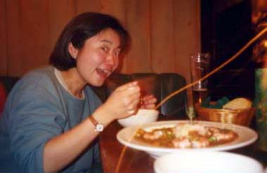

セドナ日記 〜 第２日目 98.5.5
バッファローのウエスタンディナー
この日の夕食はヘ、B＆Bの近くの、スイス料理屋にすることにした。もちろんポーラお勧めの１店である。
ところが、この日は貸切のパーティで、僕らはいれてもらえなかった。（当然ですが....）
次に、B＆Bから近いところに日本料理屋があったが、まだ日本食が恋しくないので、もう少し歩いて、ダウンタウンの「Cawboy Club」に行った。
この店はウエスタン・アメリカンというジャンルの食事（といいつつウエスタン・アメリカンって何だ？）で、バッファローが売りである。バッファローって食べれるんだと、驚いたのだが、バッファローは低脂肪でヘルシーとかなんとか、メニューには書かれていた。要するにヘルシーということか....。そこまで店がお勧めというのであればということで、そのバッファローのシチューとサラダを注文した。もちろんビールも。味は、そこそこおいしかった。ただちょっと、大味感はあったけど、いわゆる本当の大味アメリカンに比べたら、この店はおいしいと思う。まあ、おなか、空いてるからなんでも美味しいのだということもいえるかもしれないが....。
帰り道、星を見ながら、B＆Bまで歩く。星がきれいといいたいところだが、月がほとんど満月状態で、これがすごく明るい。よって、星はよく見えなかったが、きれいな月と、きれいな月明りに照らされる岩山を見ることができた。結構、幻想的だった。
そして、快適な部屋につくと、あっという間に眠りに吸い込まれていった。ただし、明日は朝日を見ようと、アラームをセットして。